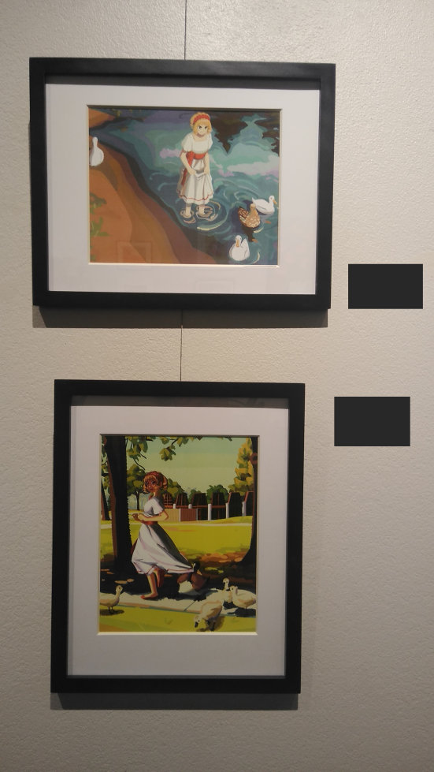
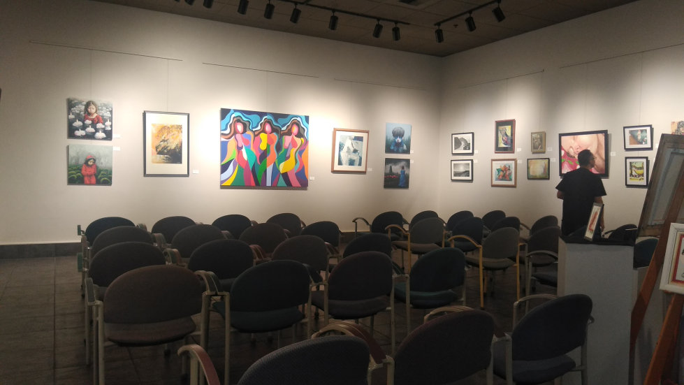

My debut in the fine art world has finally arrived... (Pictured: reception creepshot)
At 21, I've done it. It's surprising even to myself that I've never submitted work to a fine arts setting before; better late than never I say. The reality: my art is bug-eyed doujin crap... Anyway, it was through a flyer on campus back in March that I found one of the two local galleries was accepting entries for their summer show. Theme was open-ended, all mediums were accepted, so why not? It's a quaint spot hidden in a cranny downtown and is run by retired people. Most of the 'art scene' out here caters to that demographic. Even at the reception, I was one of the only young adults in the building. Catering + live music = cozy event.

Pictured: Dad admiring my work on the opening week.
The works I wound up submitting were based off of photos I have taken in my area, including the birds that inhabit them, Mallards and Canada geese. The two white ducks may have been Pekins but it isn't my area of expertise. The girl is my character Leche. I've already written about her and the illustrations in their dA uploads, so please head there to view them at their original resolutions~
As for the printing and framing, I spent about $35 USD. Did you know some works in high-end galleries use Hobby Lobby frames? And that they were having a half-off sale across the store to make room for Autumn schlock? I ran off with those matted frames for $20. The illustrations were 'blown up' a bit at my dad's suggestion -- a good call, as they would have been dreadfully small on the wall -- and printed with a matte finish for $3. The first prints I bought at the drugstore were much more vibrant but expensive, unfaithful to the original colors, and glossy. Wires for hanging were fastened to the back of each frame as per gallery guidelines. Guess I can be a professional framer now.
Back...